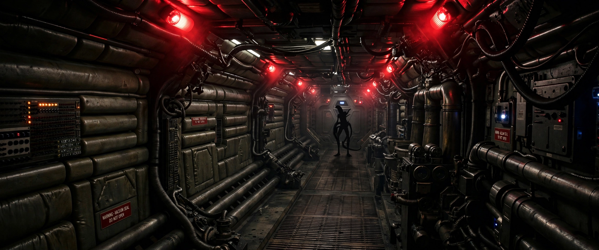

Alien (film)
From Wikipedia, the free encyclopedia

Alien is a 1979 science-fiction horror film directed by Ridley Scott and written by Dan O'Bannon. It follows the crew of the commercial spacecraft Nostromo, who encounter a deadly extraterrestrial lifeform after investigating an unknown signal on a distant moon. Starring Sigourney Weaver as warrant officer Ellen Ripley — her breakthrough role — the film's tagline, 'In space no one can hear you scream', became one of cinema's most famous.
Production
O'Bannon, stung by the collapse of his Dune project with Alejandro Jodorowsky, wrote a script marrying haunted-house horror to blue-collar science fiction; Swiss artist H. R. Giger's biomechanical designs (from his book Necronomicon) gave the creature and the derelict ship their psychosexual dread. Scott shot at Shepperton with meticulous 'lived-in' sets; the chestburster scene — kept secret from the cast beyond John Hurt — produced genuinely shocked reactions.
Reception and themes
A major hit, Alien won the Academy Award for Best Visual Effects and entered the US National Film Registry. Critics read it through labour (the crew are truckers sacrificed by 'the Company'), gender (Ripley, written unisex, played by Weaver, became action cinema's defining heroine) and body horror; its 'used future' production design permanently changed science-fiction aesthetics.
Franchise
Sequels include James Cameron's action-oriented Aliens (1986), often ranked with the original; David Fincher's Alien 3 (1992); Alien Resurrection (1997); Scott's prequels Prometheus (2012) and Alien: Covenant (2017); crossover Alien vs. Predator films; and Alien: Romulus (2024), returning to the horror register — plus games (the acclaimed Alien: Isolation, 2014), novels and comics.